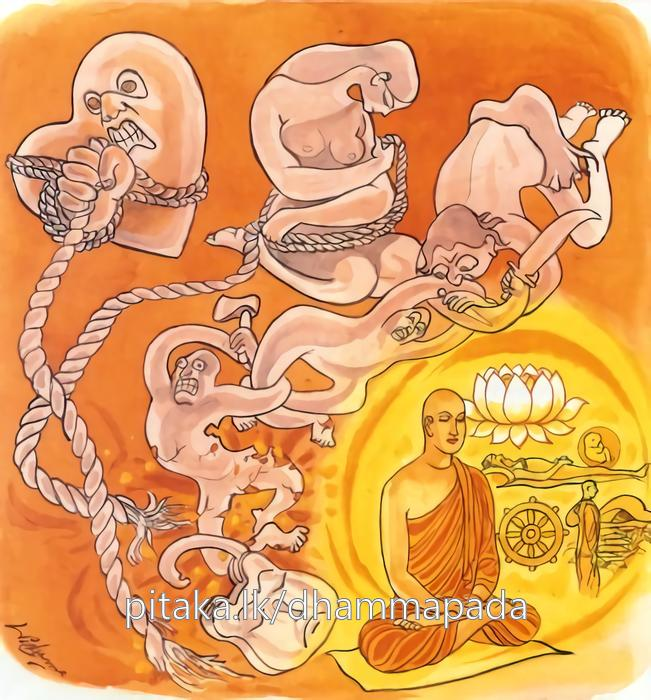

26-15 චුල්ලරෝහිත - මහාරෝහිත බ්රාහ්මණයෝ
මෙම කතාව ධම්මපද අටුවාවෙන් ද කියවන්න.
ඡෙත්වා නද්ධිං වරත්තඤ්ච සන්දාමං සහනුක්කමං
උක්ඛිත්තපලිඝං බුද්ධං තමහං බ්රූමි බ්රාහ්මණං.
(ක්රෝධ සංඛ්යාත) නද්ධිය හෙවත් දළ වර ද, තෘෂ්ණා නැමැති වරපට ද, අනුශයානුක්රම සහිත වූ (ද්වාෂෂ්ටිදෘෂ්ටි නැමැති) මහ දම ද, (ඒ ඒ මාර්ගයෙන්) සිඳලා, උදුරා දැමූ (අවිද්යා නැමැති) අගුල ඇති සිවුසස් අවබෝධ කළ ඒ ක්ෂීණාස්රවයා බ්රාහ්මණ නමැ යී මම කියමි.

අප බුදුරජානන් වහන්සේ දවස චුල්ලරෝහිත - මහාරෝහිත නමින් ප්රකට වූ බ්රාහ්මණයෝ දෙ දෙනෙක් වූහ. ඔවුනට ගොන්නු දෙ දෙනෙක් ද සිටියහ. ඒ දෙ දෙන එක් දවසක් “මාගේ ගොන් හයිබල ඇත්තේ ය, තාගේ ගොන් හයිබල නැත්තේ ය” යි විවාද කරන්නට වූහ. ”ගොන් දෙන්නාගේ හයිබල බලන්නට ගැල් බැඳ දක්කා බලමු”යි දෙ දෙනා ම නියම කරගෙණ අචිරවතී ගඟබඩට ගෙණ ගොස් ගැලක වැලි පුරවා ගොනුන් විය යොදාලූහ. ඒ වේලෙහි භික්ෂූන් වහන්සේලා ද ගඟට නාන්නට ගොස් සිටියහ. බමුණෝ ද ගොන් මෙහෙයූහ. ගැල, බර බැවින් නො සැලී සිටියේ ය. වියබාන් කැඩී ගියේ ය. නාන්නට ගිය භික්ෂූන් වහන්සේලා එ දැක විහාරයට ගොස් එ පුවත බුදුරජානන් වහන්සේට සැල කළහ. උන්වහන්සේ “මහණෙනි! මේ විය හා බාන් බැහැරි ඒවා ය, හයිබලැති කවුරු හෝ ඒවා කඩා බිඳ දමනු ඇත, මහණහු විසින් තමා තුළ වූ ක්රොද නැමැති දළවරද තෘෂ්ණා නැමැති වරපට ද සිඳලන්නට වටී ය”යි වදාරා මේ ධර්මදේශනාව කළ සේක.
ඡෙත්වා නද්ධිං වරත්තඤ්ච සන්දාමං සහනුක්කමං,
උක්ඛිත්තපළිඝං බුද්ධං තම්හං බ්රෑමි බ්රාහ්මණන්ති.
දැඩි රැහැණ ද වරපට ද අනුක්රම සහිත වූ මහදම ද සිඳ හැර සිටියා වූ උදුරා දැමූ හිදිබා ඇති සිවු සස්දහම් දන්නා වූ ඔහු, මම බමුණු යි කියමි.
ඡෙත්වා නද්ධිං වරත්තං ච සන්දාමං සහනුක්කමං = දැඩි රැහැණ ද වරපට ද අනුකම සහිත වූ මහදම ද සිඳ හැර සිටියා වූ.
මෙහි ‘නද්ධි’ නම්: ක්රෝධය යි. ක්රෝධය තෙමේ රැහැණකින් වියගහ, ඒරියා කඳෙහි බැඳ තබන්නා සේ පරාපකාරය සිත්හිලා තදින් දැඩි ව බඳින්නේ ය. එහෙයින් ක්රෝධය ‘නද්ධි’ නම්. “නහ්යතො බන්ධියතෙති යයා සා නද්ධි” යනු නිරුක්ති.
‘වරත්ත’ නම්: මෙහි තෘෂ්ණා ය. රැහැන්පටින් ඒ ඒ දැය බැඳ තබන්නා සේ තෘෂ්ණා තොමෝ සත්ත්වයා සසර බැඳ තබන්නී ය. එහෙයින් තෘෂ්ණාව ‘වරත්ත’ නම්. [1]
“වරන්ති බන්ධන්ති අන්නොති = වරත්තා” යනු නිරුක්ති.
‘සන්දාම’ යනු, මෙහි දෙ සැට මිසදිටු ය. මහදමකින් නොයෙක් දෙනා දැඩිලෙස එකට බැඳ තබන්නා සේ දෙ සැට මිසදිටු, මිසදිටු ගත්තවුන් සසර දැඩි ව බැඳ තබන්නී ය. එහෙයින් දෙ සැට මිසදිටු ‘සන්දාම’ නම්. [2] “යත්රෙ කස්මිං බහලපග්ගහයුත්තෙ අනෙකා බන්ධියන්තෙ” යනු අර්ත්ථවිවරණ යි.
‘අනුක්කම’ නම්: ශරීරගත ව පවත්නා මී විෂක් යම් යම් ආහාර පාන විහරණ කරණ කොට නැවැත නැවැත නැගී එන්නා සේ, තමාගේ නැගී සිටීමට සෑහෙන කරුණක් අරමුණක් එළැඹැ සිටි කල්හි නැගී සිටුනා සිත් සතන්හි හෝනා සත්වැදෑරුම් අනුශයධර්මයෝ ය.
උක්ඛිත්තං පළිඝං බුද්ධං තං අහං බ්රෑමි බ්රාහ්මණං = උදුරා දැමූ හිදිබා ඇති සිවු සස් දහම් දත්තා වූ ඔහු, මම බමුණු යි කියමි.
‘උක්ඛිතපළිඝ’ උදුරා හළ කණයම ඇත්තේ ය. පළිඝැ යි කීයේ කණයම ය. මේ නම්, ගෙට වැද්ද නො දෙන්නට ඇතුළතින් දොර ලෑලි සවිකරණු සඳහා යොදන අගුල හෝ දොරපොල්ල ය. කණය ම දොර වැසූ කල්හි එහි වැදීම වළකින්නේ ය. එමෙන් යමෙක් අවිද්යාවෙන් වැසී ගියේ නම් ඔහුගේ නිවන් ගමන වළකින්නේ ය. එහෙයින් අවිද්යාව පළිඝය වැනි ය. මෙහි පළිඝැ යි කීයේ අවිද්යා ය. ඒ මේ අවිද්යා නැමැති පළිඝය අර්හනමාර්ගඥානයෙන් උදුරා දැමූයේ ‘උක්ඛිත්තපළිඝ’ නම් වේ.
‘බුද්ධ’ නම්: චතුරාර්ය්යසත්යය මුළුමනින් තතු විසින් දතුයේ ය. [3] ක්රෝධයත් තෘෂ්ණාවත් අනුශය සහසිත වූ දෙසැට මිසදිටුත් අවිද්යාවත් මුල් සුන් කොට නසා සිවු සස් දහම් තතු පරිදි දැන සිටි රහතුන් වහන්සේ ම බ්රාහ්මණ වන සේකැ යි මෙයින් වදාළ සේක.
ධර්මදේශනාවගේ අවසානයෙහි පන් සියයක් භික්ෂූන් වහන්සේ රහත් බැව්හි පිහිටියාහු ය. ධර්මදේශනා තොමෝ පැමිණ සිටි පිරිසට ද වැඩ සහිත වූ ය.
බ්රාහ්මණවස්තුව නිමි.